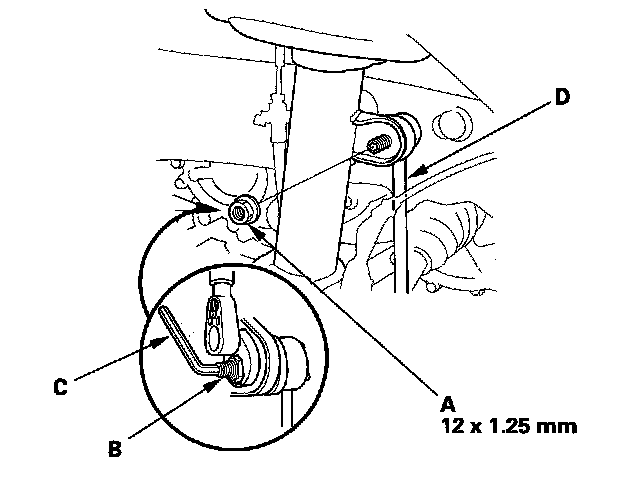
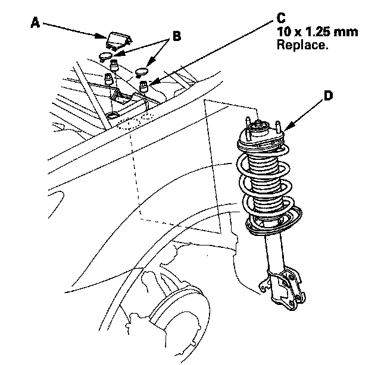

Front Suspension
Damper/Spring Removal and InstallationNOTE: Except where called out, the illustrations show without active damper system.
Removal
1. Raise the front of the vehicle, and support it with safety stands in the proper locations.
2. Remove the front wheel.
3. With active damper system: Disconnect the damper coil connector (A) and remove the flange bolt (B) and the harness clip (C).
NOTE: Be careful not to damage or contaminate the damper coil connector.
4. Remove the wheel sensor harness (A) and the brake hose (B) from the damper (C). Do not disconnect the wheel sensor connector.
5. Remove the flange nut (A) while holding the joint pin (B) with a hex wrench (C) and disconnect the stabilizer link (D) from the damper.

6. Remove the damper pinch bolts (A) and flange nuts (B) from the damper..
7. Remove the cover (A) and the service caps (B).

8. Remove the flange nuts (C) from the top of the damper.
9. Remove the damper assembly (D).
NOTE:
^ The damper springs are different, left and right. Mark the springs L and R before you continue.
^ Be careful not to damage the body.
Installation
1. Install the damper assembly (A) on to the frame. Note the direction of the damper mounting base as shown.
NOTE: Be careful not to damage the body.
2. Loosely install the new flange nuts (B) to the top of the damper.
NOTE: Install the cover (C) and the service caps (D) after tightening the flange nuts to the specified torque value.
3. Loosely install new damper pinch bolts (A) and new flange nuts (B) to the damper (C).
4. Connect the stabilizer link (A) to the damper (B) and loosely install new flange nut (C) while holding the joint pin (D) with the hex wrench (E).
5. Raise the front suspension with a floor jack to load the suspension with the vehicle's weight.
6. Tighten the damper pinch bolts and the flange nuts to the specified torque value.
7. Tighten the flange nuts on top of the damper to the specified torque value.
8. Install the cover and the service caps.
9. Install the wheel sensor harness (A) and the brake hose (B) to the damper (C).
10. With active damper system: Connect the damper coil connector (A) and install the flange bolt (B) and the harness clip (C).
NOTE: Be careful not to damage or contaminate the damper coil connector.
11. Clean the mating surface of the brake disc and the inside of the wheel, then install the rear wheel.
12. With active damper system/Left side: Start the engine, then make sure there are no active damper system DTCs with the HDS.
13. With active damper system/Left side: Do the DAMPER FORCE OPERATION in the ACTIVE DAMPER SYSTEM INSPECTION MENU with the HDS, then make sure the all four damper units function normally.
14. Check the wheel alignment, and adjust it if necessary.